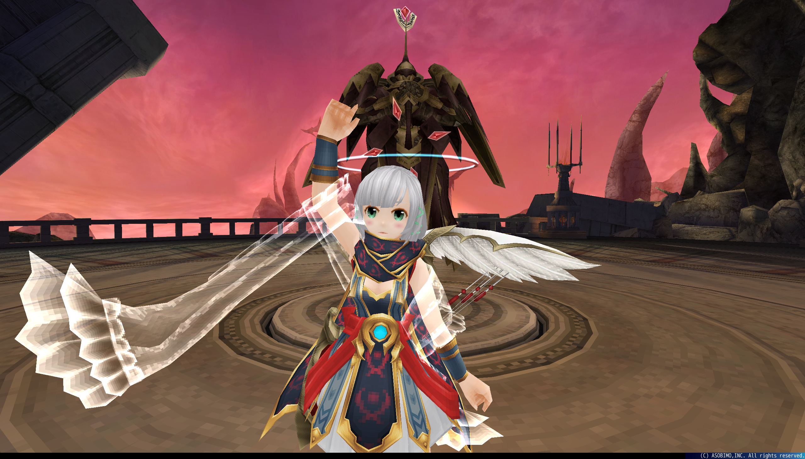
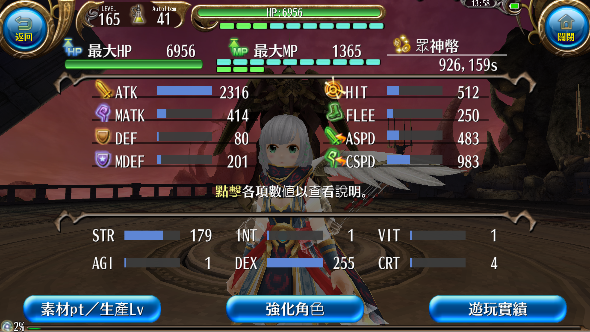

哈喽~大家好 我是夜夜(揮手
因應貓貓的要求我也來寫一篇關於弓手的文章啦~
不過我還玩沒多久所以並不是很清楚其他人是怎麼玩的
所以我就以我自己的腳色來做介紹，並解釋我點這些技能的理由
我會將內容分成3個大主題 弓手基本配點&150前和150後
原因是有了4階技能後的玩法會整個大改變~所以再用等級做個區分
＊另外提醒大家~這篇主要是針對"純弓手"不包含練匠的喔!
弓手基本配點
- 首先來介紹弓手會點的3個能力!
- DEX:玩弓必點，點1增加3atk 通常都是先滿dex再考慮點其他的
- STR:對於輸出來說第二重要的能力，點1增加1atk 並增加少量爆傷
- CRT:增加爆擊率，主要是為了達到100%爆擊
- VIT:可以增加血量!!增加存活率!!活著才有輸出!!斟酌點一些就好
給大家參考我的配點~
我的弓手走的是極致輸出路線，所以並沒有點vit增加生存率
點滿DEX後，達成百爆需求就全部都點STR了
之前有人問過我爆率怎麼算，所以我就在這裡也順便說明一下~
公式是:暴擊率公式:（25+ CRT /3.4）*（100 + 暴擊率+N%）% + 暴擊率+N+ 技能補正
你說看不懂?沒關係!!我也看不懂
其實不難的啦~看我算一次就知道了!就拿我的小弓來舉例吧~
秘訣就是把"爆擊率+n"和"爆擊率+n%"分開
請看以下的裝備圖~
CRT為紅色
爆擊率+n%為橘色
爆擊率+n為藍色
所以我的爆率是 (25+4/3.4)*(100+15(法袍)+4(卦莫石))%+16(弓)+15(法袍)+20(帽子)+8(獅將石)+5(魔炮石)+5(好戰分子的爆擊率提升點滿)=100.15
剛好達到百爆~